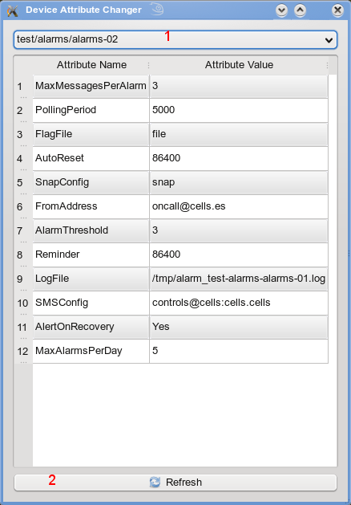
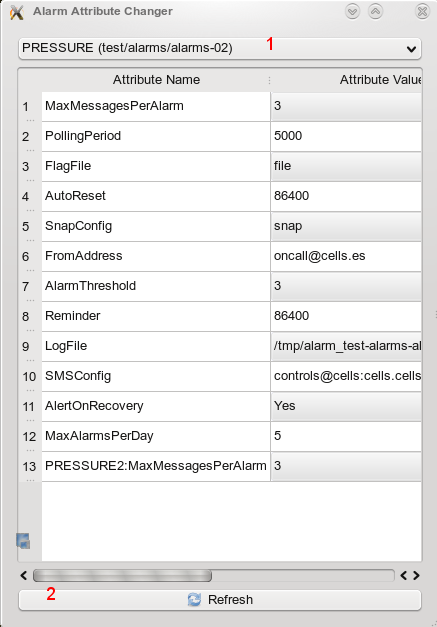
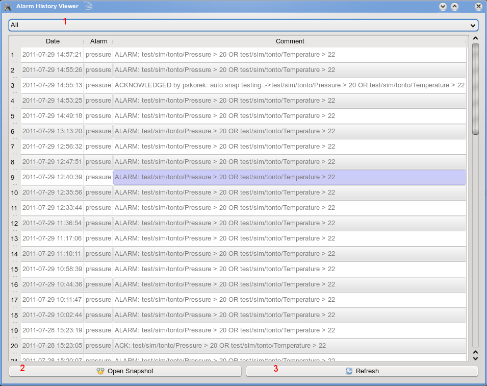
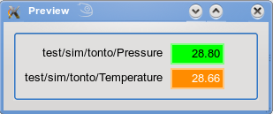

Panic is an application for controlling and managing alarms.
It allows the user to visualize existing alarms in a clear form and adding/editing/deleting alarms.
In edit mode user can change name, move alarm to another device, change severity, description and modify formula.
Additional widgets in which the app is equipped allows alarm history viewing, phonebook editing and device settings manipulation.
Application can be downloaded from here
1, 2, 3, 4. Buttons for starting additional widgets
5. View selection drop-down list - three views [Alarms view, Receivers view, Devices view]
6. Refresh button (available too in a context menu over the alarm list)
7. New alarm button
8. Delete alarm button (available too in a context menu over the alarm list)
9. Details button (if active the web page with the details of alarm will be displayed)
10. Reset alarm button - after clicking Reset dialog appeares (available too in a context menu over the alarm list)
11. Acknowledge alarm button (available too in a context menu over the alarm list)
12. Add receiver button (active while editing an alarm - receiver widget will appear with the list of receivers)
13. Edit alarm button (available too in a context menu over the alarm list or when double-clicking on the alarm)
14. Preview actual values button (starts a preview widget with actual values of attributes present in alarm formula)
15. Save alarm button (active while editing an alarm)
16. Cancel button (active while editing an alarm)
17. Close application button
Phonebook widget
1. Add a person button
2. Remove a selected person button
3. Refresh list button
Double click on the contact enables to edit its information
Device attribute changer
1. Device drop-down list
2. Refresh list button
Double click on the attribute value field enables to change it
Alarm attribute changer
1. Alarm drop-down list
2. Refresh list button
Double click on the attribute value field enables to change it
History viewer
1. Alarm drop-down list
2. Open selected snapshot - starts the Snap application with current snapshot selected (available too in a context menu over the snapshots list)
3. Refresh list button
Double click on a snapshot starts the preview widget (available too in a context menu over the alarm list)
Preview widget
